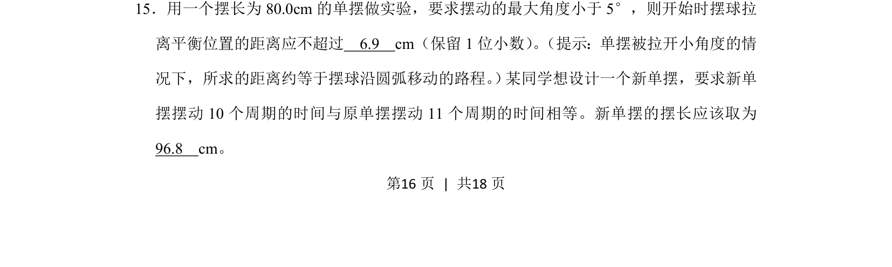
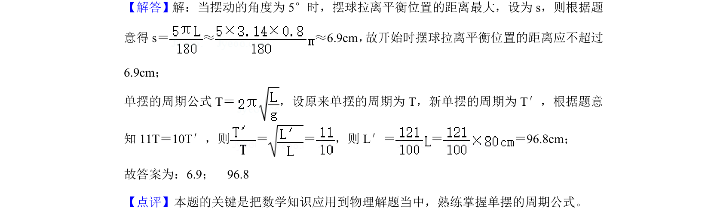

考点：单摆周期公式 小角度近似 简谐运动

单摆小角度摆动时弧长与弦长近似相等，并利用周期公式计算摆长变化。

📄 原 PDF 第 16 页：
素材/真题/吉林/2008-2024·（吉林）物理高考真题/2020年高考物理试卷（新课标Ⅱ）（解析卷）.pdf
15．用一个摆长为80.0cm的单摆做实验，要求摆动的最大角度小于5°，则开始时摆球拉 离平衡位置的距离应不超过 6.9 cm（保留1位小数） 。 （提示：单摆被拉开小角度的情 况下，所求的距离约等于摆球沿圆弧移动的路程。 ） 某同学想设计一个新单摆，要求新单 摆摆动10个周期的时间与原单摆摆动11个周期的时间相等。新单摆的摆长应该取为 96.8 cm。